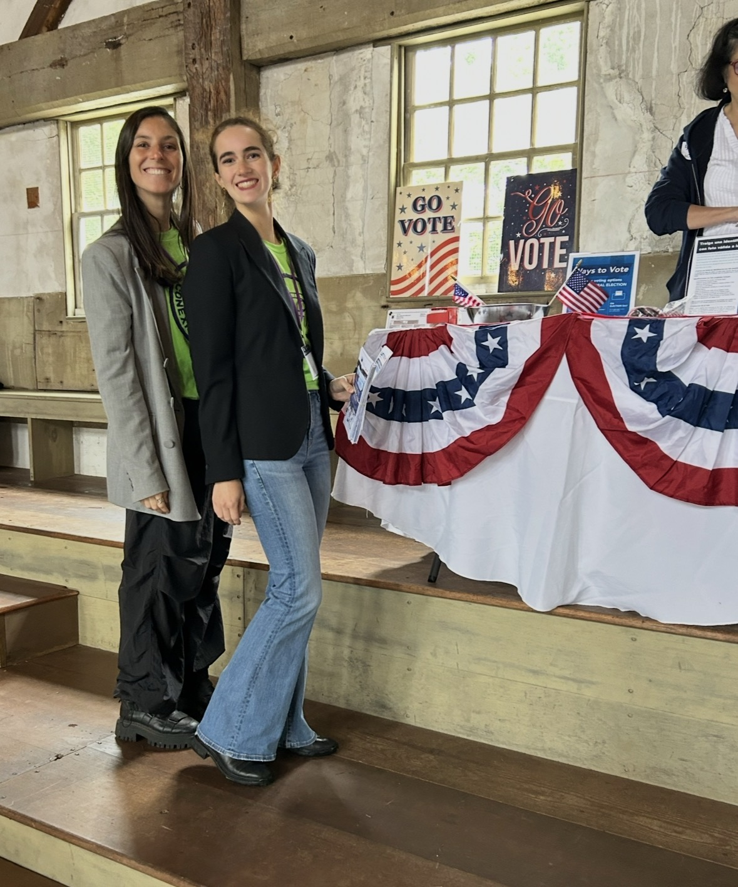

Newport County, Rhode Island
Empowering Voters. Defending Democracy.
We're a nonpartisan, volunteer League helping every eligible voter in Newport County's six towns register, learn about the candidates and issues, and vote with confidence.

Newport County · Rhode Island
Elections 2026 — Everything You Need to Vote
Our impact
Our Impact in 2025
Through the dedication of our volunteers and members, we're making democracy stronger in Newport County.
Get started
Vote. Learn. Act.
Vote
Register, check your status, find your polling place, and see what's on your ballot.
Learn
Hear from candidates at our nonpartisan forums in all six towns, and read up on the issues before you vote.
Act
Join the League, volunteer, or contact your representatives about the issues you care about.
Why It Matters
Democracy thrives when every eligible citizen can vote and participate in government. The League of Women Voters has been defending voting rights and promoting civic engagement for over 100 years.
In Newport County, we work year-round to ensure that every voice is heard and every vote counts. From registering first-time voters to hosting nonpartisan candidate forums, we empower our community to make informed decisions at the ballot box.
Our Work in Action

Voter Registration
Registering voters at community events throughout Newport County

Defending Voting Rights
Advocating for accessible, secure elections for all eligible voters

Civic Engagement
Building awareness and fighting for fair, safe, and secure elections
How to Get Involved
Making a difference is easier than you think. Here's how to join us:
1. Become a Member
Join the League for $75/year (individual) or $150/year (household of two), or pay what you can. Membership includes our newsletter, event invitations, and voting rights in League decisions.
2. Volunteer Your Time
Help register voters, organize events, or observe local government meetings. We offer flexible opportunities that fit your schedule—from 2-5 hours per month.
3. Stay Informed
Subscribe to our monthly newsletter, attend our quarterly meetings, and follow us on Facebook to stay connected with League activities and advocacy efforts.
Make Your Voice Heard
Join fellow citizens across Newport County working to strengthen democracy and empower voters. Together, we can make a difference.
Not ready to join? Subscribe to News & Notes by email.